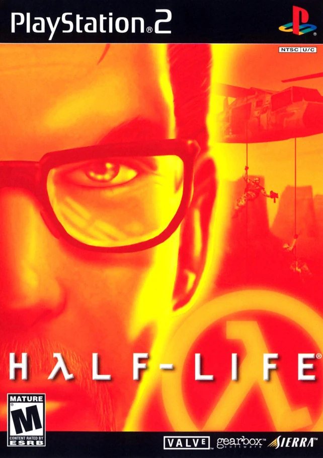
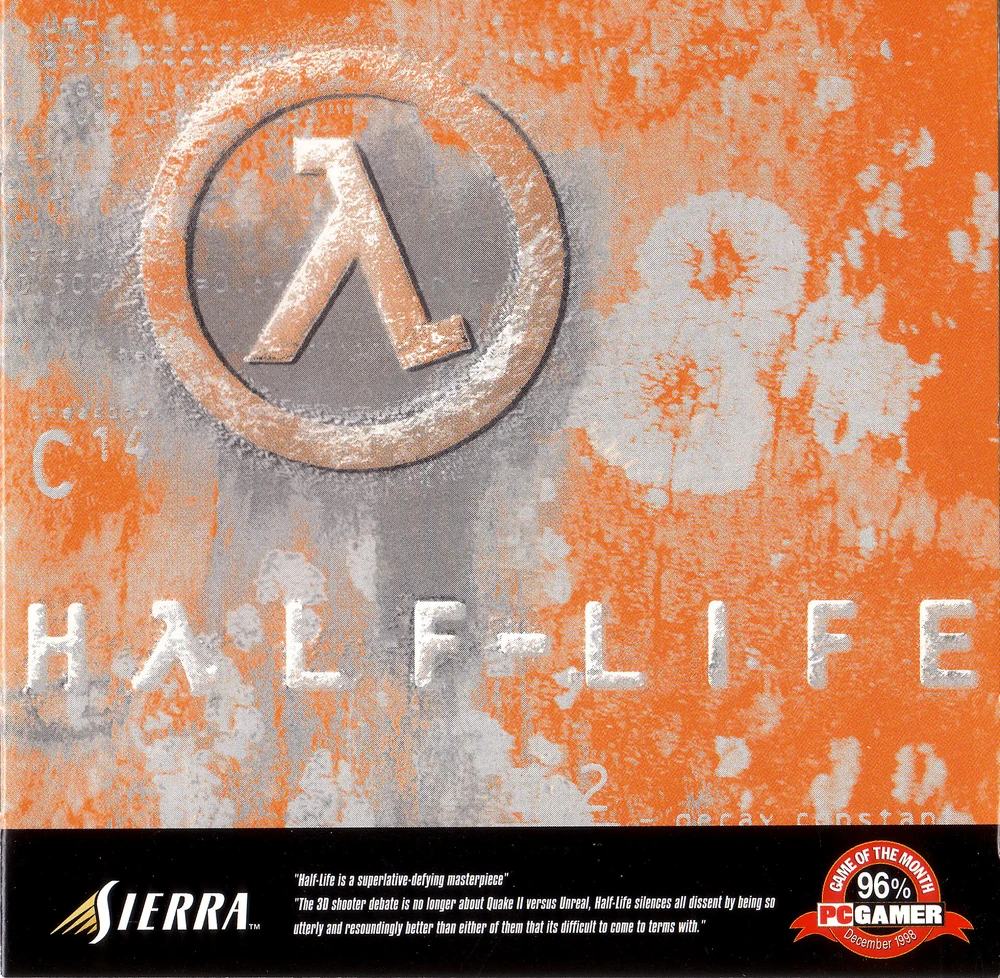

Half-Life
O jogo que tem fãs que ainda nem nasceram
Essa página foi feita para um amigo meu, o Heitor, alguém que não apenas jogou Half-Life, mas realmente entendeu o que faz esse jogo ser tão especial. Mais do que um clássico, esse é o tipo de jogo que muda a forma como você enxerga videogames, e foi justamente através das conversas com ele que eu percebi o impacto real que Half-Life teve na história dos games.
Half-Life, estilizado como HλLF-LIFE, não é apenas mais um jogo de tiro em primeira pessoa. Ele é um dos pilares que redefiniram o que significa imersão nos videogames. Desenvolvido pela Valve e lançado originalmente em 1998, o jogo coloca o jogador na pele de Gordon Freeman, um cientista que precisa sobreviver a um desastre causado por um experimento que deu terrivelmente errado, a famosa cascata de ressonância.
Mas o que torna Half-Life especial não é apenas sua história de invasão alienígena ou seu cenário científico. É a forma como essa história é contada.
Na época, jogos como Doom e Quake já haviam estabelecido o gênero FPS, focando principalmente em ação. Half-Life pegou essa base e levou para outro nível ao introduzir algo que hoje parece comum, mas que na época era revolucionário: narrativa integrada à jogabilidade. Em vez de interromper o jogo com cutscenes, a Valve decidiu que o jogador nunca deveria perder o controle.
E isso muda tudo.
Você não “assiste” a história, você a vive. Os eventos acontecem ao seu redor, personagens falam com você enquanto você ainda pode se mover, e o mundo continua funcionando independentemente de você parar para observar. Isso cria uma continuidade que mantém o jogador preso do início ao fim.
E aqui entra um dos pontos mais interessantes que o Heitor destacou: a filosofia de design do jogo.
Half-Life ensina o jogador sem explicar diretamente. Em vez de um tutorial dizendo o que fazer, o próprio mundo te mostra. Um exemplo clássico é o inimigo que fica preso no teto com a língua pendurada. O jogo não te avisa do perigo, ele mostra outro ser sendo capturado antes de você chegar lá. Você aprende observando, não lendo instruções.
Isso pode parecer simples hoje, mas na época foi algo extremamente avançado. Essa ideia de “ensinar mostrando, não contando” virou base para o design de muitos jogos modernos.
Outro ponto que chama muita atenção é a inteligência artificial. Para 1998, o nível de comportamento dos inimigos era impressionante. Os soldados não agiam de forma aleatória, eles se movimentavam em equipe, se posicionavam estrategicamente, cercavam o jogador e reagiam de forma quase realista. Isso tornava cada combate mais dinâmico e imprevisível.
Além disso, a escolha de manter Gordon Freeman como um protagonista silencioso não foi por acaso. Ele não fala nem expressa emoções diretamente, e isso permite que o jogador se projete nele. Como o próprio Heitor comparou, ele funciona quase como o “Link da Valve”: um personagem que existe dentro do mundo, mas que ao mesmo tempo representa quem está jogando.
Nem tudo, porém, foi perfeito ao longo do tempo. A versão Half-Life: Source, que deveria ser uma melhoria técnica do original, acabou sendo mal recebida pela comunidade. Apesar de trazer gráficos atualizados, ela apresentou diversos problemas, como bugs, falhas na física e até mudanças que prejudicaram elementos importantes do jogo, como a inteligência artificial. No fim, acabou sendo vista como uma versão inferior ao clássico original.
Mesmo assim, o impacto de Half-Life permanece.
Ele foi um dos primeiros jogos a unir narrativa, gameplay e imersão de forma contínua e natural. Não apenas inovou, mas criou padrões que são usados até hoje na indústria. Muitos dos conceitos que parecem básicos atualmente começaram ali.
No fim das contas, Half-Life não é só um jogo antigo ou nostálgico.
É uma aula de como fazer videogame direito.
E talvez seja por isso que, mesmo depois de tantos anos, ainda existem pessoas como o Heitor que continuam falando dele com esse nível de admiração.


